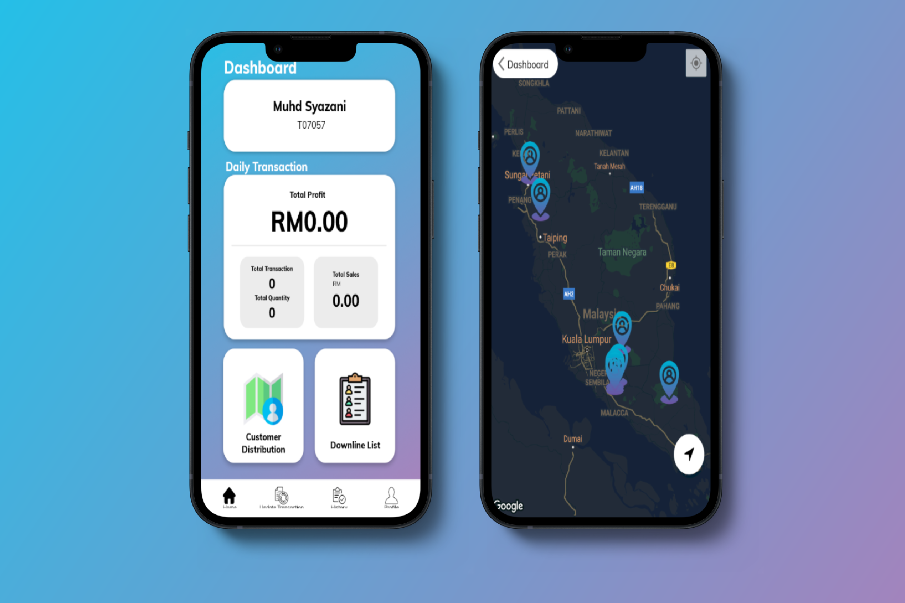

A platform for sales agent to record their sales transaction.
Online business can be tedious, so a simple application should be held so that these students are able to monitor their business anytime and anywhere. The Downline Business App is the application that should do the work.
A mobile application that is built to help sales agents in keeping track of their sales transactions, provide sales analysis and customer mapping. By having this application, this could help agents to plan a better marketing strategy based on customer mapping and sales analytic. Additionally, this app constantly motivates the agents by having motivational notifications to top-selling agent.
The application is built for two types of users will similar functionalities. Right after the application is launched, all users will be asked to log in then the user will be redirected to their respected interface depending on their role which is agents and admin. Upon successful login, there will be a dashboard that displays sales for the agents, daily transaction details, and an option to check customer distribution and downline list. Agents will receive a congratulatory notification if they are selected as the top-selling agent.
For admin, they can approve the agent registration request, remove and disable any agents to halt their selling activities. On the other hand, agents can add downline agents and transactions. All the data will be recorded in the transaction history and downline list section.
Downline Application is mainly to help admin and agents to manage their numerous transactions and downline agents such as adding data into the system, removing data from the system, and even disabling several users if necessary. There are also additional features such as a number of sales summaries in the form of graphs and detailed graphics. Lastly, customer distribution can also be tracked by both admin and agent for marketing strategy purposes.